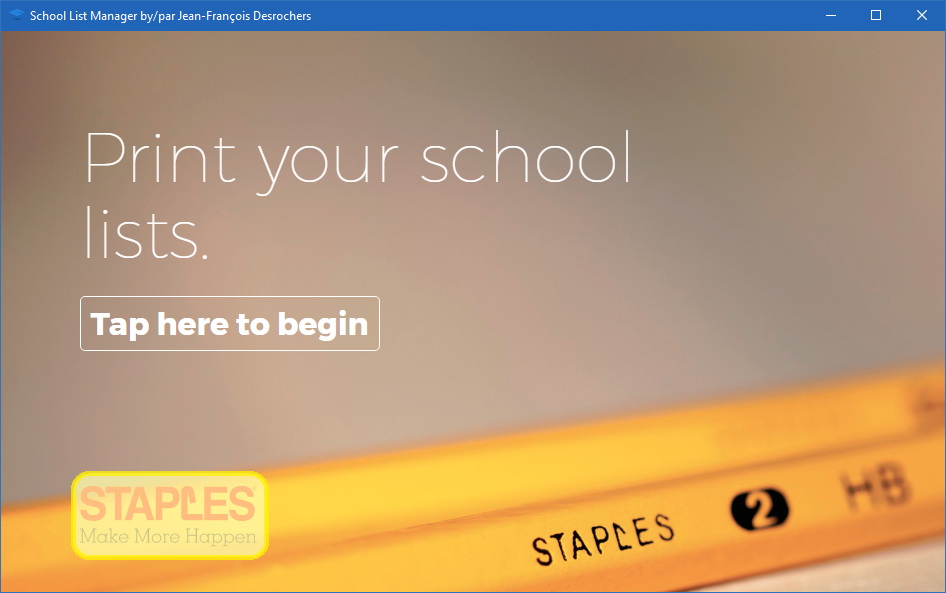
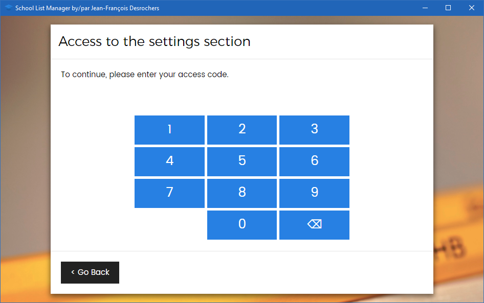
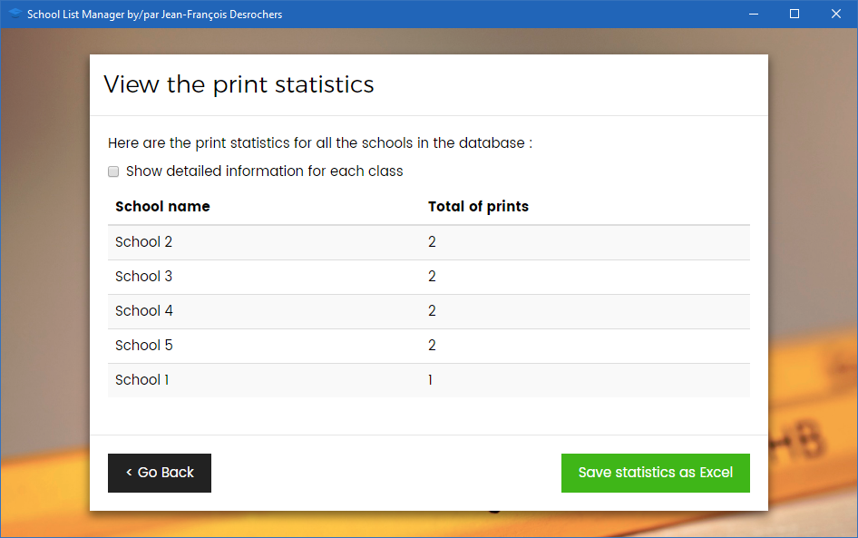
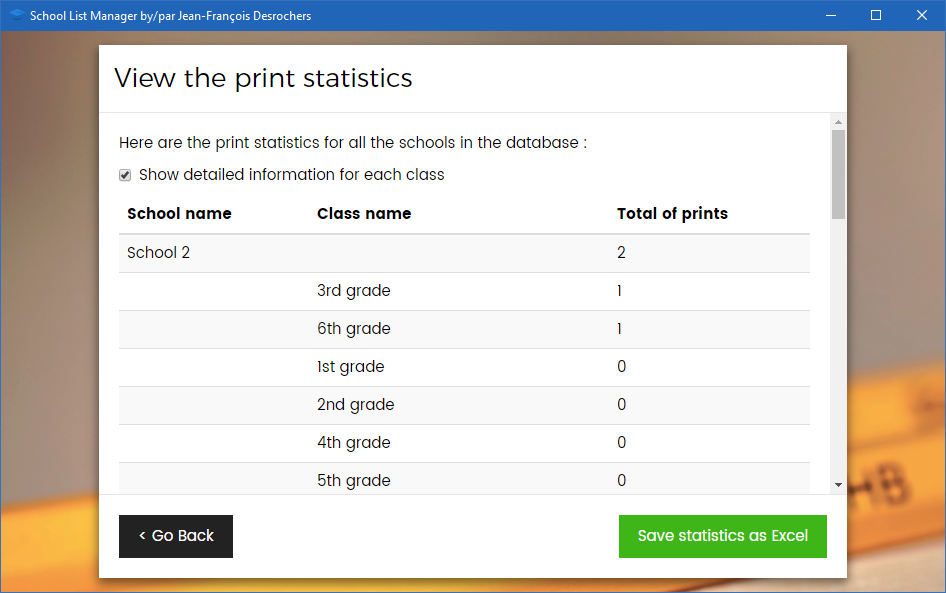

Settings and more!¶
How to access the settings menu¶
To access the settings menu, double-click on the Staples logo in the lower left corner of the main screen.

You will need to enter an access code (PIN number). The access code is comprised of your store number prepended with '0', making a total of 4 digits. For example, if your store number is 999, your access code will be 0999. If your store number is 40, your access code will be 0040 and so on...

This will get you to the settings panel :

Some settings, notably : Language settings, Store information and Load new lists from USB are simply repeating the steps from the initial setup. We will cover the next 3 options in this guide.
Edit the schools and the lists¶
Like most of the program, this screen is self-explanatory. You click on the + buttons to show the classes. You use the pencil buttons to rename the classes or the schools and the x buttons to delete them. None of these operations will be made permanent until you click the Save button. That way, if you made a mistake, you can always go back and do it again.
Danger
Like the program notes, once you press the save button, you cannot go back. You will lose the data from deleted schools or classes, including print statistics, and you will have to re-import if you need the recover them.

View the print statistics¶
Here is a nice tool that will help you in your networking with the schools: usage statistics. In this menu, you can see which schools have parents who shop in your store by tracking which lists are printed the most.

You can also view them for each class :

And you can even export them in Microsoft Excel format for your own analytic pleasure!
Questions and comments¶
If you have any issue using this program or if you have questions, comments or suggestions for new features, this function will allow you to do just that. Not only will I get instantly notified of your message, but you will also receive a link that you can use to track the progress of your comment, your bug or your idea.

Don't hesitate to use it! This concludes this guide. I wish you all the fun in using this program and a pleasant back to school!